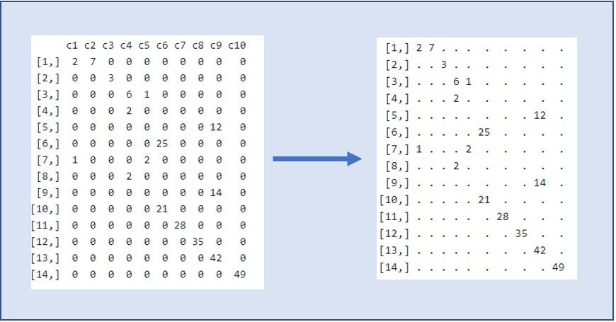

Capitulo 3 Preparación de los Datos
3.0.1 Preprocesamiento
Muchos datos necesitan preprocesamiento sobretodo porque están codificados como “character” en lugar de “factor”: por ejemplo, las variables: arrival_date_year,arrival_date_month,arrival_date_week_number,meal,country,market_segment,distribution_channel,agent,company,customer_type, hotel,agent_company.reserved_room_type,assigned_room_type,deposit_type.
Otros necesitan ser números: children
3.0.2 Ingeniería de caracterísitcas
Para el preprocesamiento de datos se agregaron variables que pensamos serían de utilidad. Entre estas nuevas variables se encuentran:
lead_time: Se cuentan los días de anticipación de la reserva y se divide en 4 grandes grupos del mismo tamaño.
dif_room: Esta variable toma en cuenta si la habitación reservada es la misma que la habitación asignada.
singles_adults: Indica si hay solo adultos (sin niños)
pascua, pascua_m1, …., pascua_m6 : indica si tal fecha era Pascua.
mag_tasa_can: Proporciona el ratio entre el total de cancelaciones respecto al total de reservaciones.
** COMBINACIONES aleatorias: Incorporamos estas variables de combinaciones al azar buscando interaciones que ayudaran al modelo.* ### Combinaciónes
Asimismo exploramos distintas combinaciones pensando en que los modelos que ibamos a usar tenían la capacidad de seleccionar automáticamente las caracterísitcas más útiles.
dias_semana: Interaccion entre el día de reservación y el número de semana.
Agent_company: La combinación de agent y company.Esta resulto muy util en los casos donde ambas variables tenían valor NULL.
dif_room: Si el cuarto asignado es diferente al cuarto reservado.
week_day_sem: Combinación de día de la semana y número de semana.
week_daymonth: Combinación de día de la semana y número de semana.
Tasa de rechazo: Proporcion de reservaciones canceladas del total de reservaciones registradas.
market_dist: Combinación de market_segment y distribution_chanel.
cust_deposti:Combinación de customer_type y deposit_type.
cust_segment: Combinación de customer_type y market_segment.
lead_deposit: Combinación de lead y del tipo de deposito.
lead_week: Combinación de lead y número de semana de la reserva.
meal_reserv: Combinación de tipo de alimento y tipo de reserva.
country_month: Combinación del mes de la reserva y el país de origen.
3.1 CV
Ahora sobre el conjunto de entrenamiento guardaremos un cacho para probar.
# proporción que queremos de training
training_size <- 0.8
# filas de training
training_rows <- sample(seq_len(nrow(newdata_train)),
size=floor(training_size*nrow(newdata_train)))
#training set
data_training <- newdata_train[training_rows,]
#training cuenta con la y
#validation set
# la variable objetivo por separado
data_validation <- newdata_train[-training_rows,-1] #sin la y
y <- newdata_train[-training_rows,1] 3.2 Nivelación de variables
Antes de realizar la conversión a matrices ralas necesitamos indicarle a la computadora que las bases de datos cuentan con los mismas variables y dentro de cada variable categórica, los mismos niveles. Esto debido a que al hacer el CV, es muy probable que no todas las variables conserven la misma cantidad de niveles que la base completa antes del CV. Para ello creamos la siguiente función y la aplicamos a las bases de datos.
# creo una funcion para que las bases de datos cuenten con los mismos "levels"
# este paso es crucial para asegurarnos que traning, set y el modelo hablen "el mismo idioma", es decir que tengan las mismas variables
equallevels <- function(x, y) {
if (is.data.frame(x) & is.data.frame(y)) {
com <- intersect(x = names(x), y = names(y))
for (i in com) {
if (!is.null(levels(y[[i]]))) {
x[[i]] <- factor(x[[i]], levels = levels(y[[i]]))
}
}
return(x)
} else {
stop("`x` and `y` must be a data.frame.")
}
}3.3 Matrices RALAS
Para el procesamiento de los datos previo al modelaje se hizo one hot encoding, el cuál consiste en transformar las variables categóricas en variables dummy. Cómo ya se mencionó en el EDA, existen variables con muchísimas categorías (country, agent, company). Lo cual nos deja con un data frame lleno de muchos ceros. Para manejar este “data frame” o “matriz” con muchos ceros se hizo uso de las matrices Ralas las cuales concervan únicamente las entradas con valores distintos de cero. Para ello se utilizó la función sparse.model.matrix de la librería Matrix. La implementación del código completa la puede ver en la siguiente liga Model.
#
#Matriz de covariates
#data_training<-sample_train
Xa <-data_training %>% select(-1) #training menos y
Xb <-data_validation
Xc <-equallevels(newdata_test,Xa)
#para manejo de nas, si lo quito, por alguna razon la conversion a matriz rala me quita unas obs
options(na.action='na.pass')Ahora creo 3 matrices ralas para entrenamiento, validación y prueba.
#se quita intercepto
#se ponen todas las columnas
Xa <- sparse.model.matrix(~.+0, data = Xa)
Xb <- sparse.model.matrix(~.+0, data = Xb)
Xc <- sparse.model.matrix(~.+0, data = Xc)
#vector de Y´s
Ya<-data_training$yAhora tengo 3 matrices con una alta cantidad de variables(4,347) (debido al one hot encoding y a la nivelación) para cada dataset del CV. Esto pensando en el feature seleccion que los modelos pueden hacer. Ahora puedo aplicarles cualquier modelo de manera muy ordenada y simple.